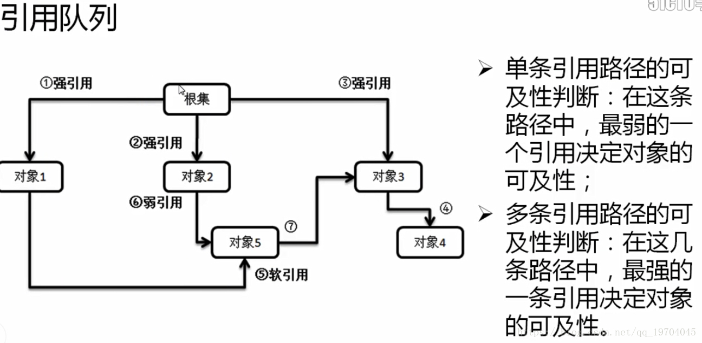

Java引用类型
目录：
1.简介
Java Reference即Java对象的引用。在Java中通过引用来操作Java对象。
Object obj = new Object();
其中，obj指向new Object()，即为一个引用.
Java中的垃圾回收(Garbage Collection)机制判断是否回收某个对象的时候,需要根据引用这个概念.通常有两种判断对象是否需要回收的方法:
引用计数法
为每个对象添加一个引用计数器,每当一个引用指向对象时,计数器就加1,当引用失效(obj=null/引用不指向对象)时,计数器就减1,当计数器为0时,则认为这个对象可以被回收.缺点：对象只有“被引用”，和“未被引用”两种状态，无法满足某些特殊情况下的场景，比如内存紧张时要回收一些对象。而且无法解决对象间互相引用的情况,A<->B,这种情况我称之为"对象间的抱团取暖"
可达性分析
从GC Roots(跟节点)的对象开始像下搜索，如果GC Roots到对象之间没有任何引用链时,则说明对象不可用.从引用链延伸出了“强引用、软引用、弱引用、虚引用”，这四种引用配合引用链来说明对象的引用情况，从而适用于不同场景下(如内存紧张、GC发生)对象是否需要回收的情况.
2.引用类型
强引用(Strong Reference)
强引用是Java默认支持的一种操作模式，也就是说在引用的处理其间，即使出现有GC，即使内存不足，该引用的数据也不会被回收。软引用(Soft Reference)
内存不足时才进行GC的空间释放String s = new String("soft reference"); SoftReference<String> soft = new SoftReference<>(s); s = null; System.gc();其中，对象只有在内存不足的情况下，才会被GC回收
应用：软引用中保存的内容如果在内存富裕的时候会继续保留，内存不足会作为第一批的丢弃者进行垃圾空间的释放。可以
作为高速缓存组件弱引用(Weak Reference)
GC发生时就回收对象.虚引用(Phantom Reference)
无法从引用队列中获取对引用对象,只能判断对象是否被加入到了引用队列.String s = new String("Phantom Reference"); ReferenceQueue<String> queue = new ReferenceQueue<>(); PhantomReference<String> pr = new PhantomReference<>(s,queue); str = null; // 断开强引用 pr.isEnqueued(); // true 能够判断对象是否被加入了引用队列 pr.get(); // 无法获得引用对象引用队列(Reference Queue)
Reference queues, to which registered reference objects are appended by the garbage collector after the appropriate reachability changes are detected.当引用对象的可达性发生变化时，就会被垃圾收集器(garbage collector)添加到引用队列中来
- 可达性分析

原则：
- 对象可及性是由引用链上面最弱的引用决定的(木桶理论)
- 多个引用链的情况下,对象的引用是最强的引用决定的
例如,对于对象5来说由两条引用链.
- 1 -> 5 (强引用 -> 软引用)
- 2 -> 6 (强引用 -> 弱引用)
根据上面的原则来判断,对象5的可达性为软引用.